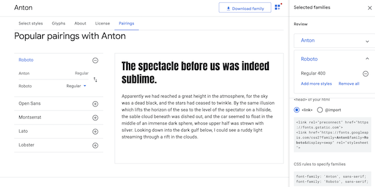

Typography References:
Anton:
This sans serif font stood out to me, I wanted a font that was bold and impact for the weather site, so I chose this one for the Heading/Title, and the H1 headers in the document.
Roboto:
Roboto was a suggestion to pair with Anton, it also is a sans serif that was a lesser bold font, that would go well for paragraphs and subheadings on the page.
Typography/Font Examples:
- 